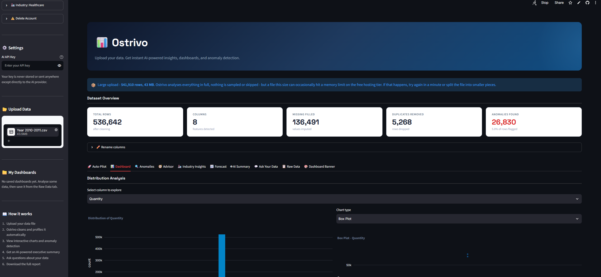

Ostrivo
Upload your data. Get instant AI-powered insights, dashboards, and anomaly detection - no spreadsheet wrangling, no BI tool license, no waiting on an analyst.

What it does
From raw file to executive-ready insight, automatically.
Auto data cleaning
Removes duplicates, fills missing values, and parses dates automatically.
Anomaly detection
Isolation Forest flags unusual rows automatically, so nothing slips through.
AI executive summary
Plain-English business summary generated automatically from your data.
Ask your data
Ask natural language questions and get direct answers, no formulas needed.
Industry-tailored analysis
Sales & Retail, Finance & Banking, Engineering & Manufacturing, and Healthcare each get a dedicated analysis view, with predictive insights tailored to that industry.
Export everything
Download a full PDF report or a Power BI-ready Excel workbook in one click.
Why it exists
Most small businesses and teams sit on data they never really look at - it's stuck in spreadsheets, too messy to trust, and there's no analyst on hand to make sense of it. Ostrivo exists to close that gap: upload a file, and within seconds you have a clean dataset, a dashboard, flagged anomalies, and a summary written in plain English.
It's built end to end by its founder - the data cleaning and analysis logic, the interface, multi-user accounts, and the industry-specific analysis engine.
Try it yourself →